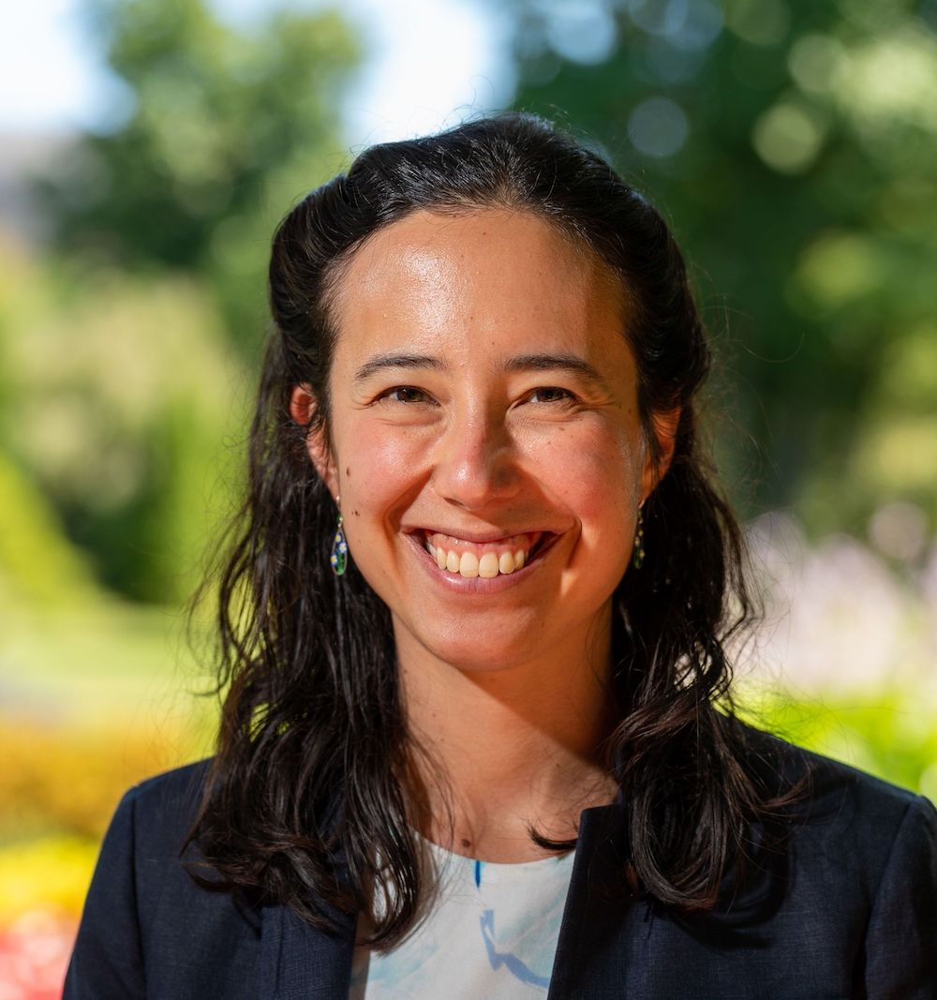

annayqho@cornell.edu
I am an assistant professor in the Department of Astronomy at Cornell.
I am interested in high-energy astrophysics, particularly the explosive manifestations of stellar death. I use a variety of observational techniques, including optical time-domain surveys, radio to submillimeter interferometry, and massively multiplexed spectroscopic surveys. I am an active member of the ZTF, DESI, and CMB-S4 collaborations, and serve as co-chair of the CMB-S4 Sources & Transients working group.
Before coming to Cornell, I was a Miller Fellow at UC Berkeley, obtained my PhD in Astrophysics from Caltech, and spent a year supported by a Fulbright Scholarship at the Max Planck Institute for Astronomy in Heidelberg, Germany. I received my B.S. in Physics from MIT.
See here for opportunities to join my group!